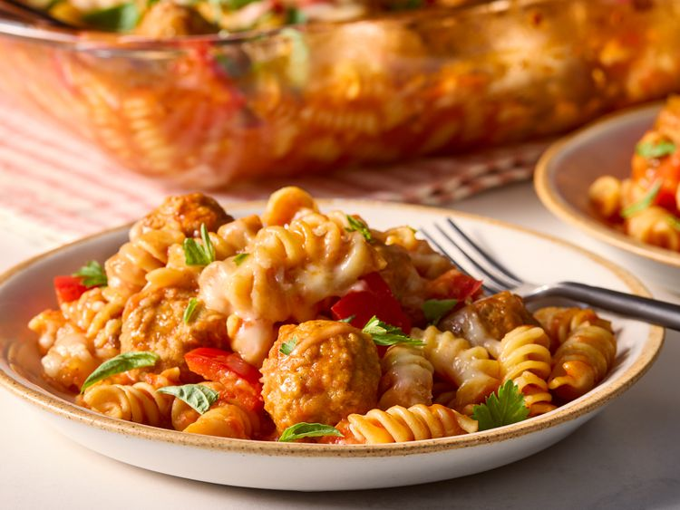

Home
Casserole

Ingredients
- 1 (16 ounce) package bulk breakfast sausag
- 1 green onion, chopped
- 1 (16 ounce) package hash brown potatoes
- 2 cups shredded Cheddar cheese
- 6 large eggs, lightly beaten
- 1 cup milk
- 1 (2.64 ounce) package country gravy mix
- 1 pinch ground paprika, or to taste
Steps
- Gather all ingredients. Preheat the oven to 425 degrees F (220 degrees C).
- Combine pasta, water, marinara sauce, meatballs, peppers, and salt in a 9x13-inch baking dish.
- Cover tightly with aluminum foil and bake until pasta is al dente, 30 to 35 minutes.
- Remove the foil and stir in 1 cup mozzarella cheese. Sprinkle with remaining 1 cup of mozzarella cheese and Parmesan cheese.
- Bake, uncovered, until cheese is melted, 10 minutes more.
- Serve garnished with fresh herbs, if desired.
This savory sausage breakfast casserole with hash brown potatoes, green onions, and cheese is easy to put together and perfect for a hearty breakfast or weekend brunch. You can cook the sausage and green onions in a cast-iron skillet, and use that to bake the casserole instead of a baking dish.